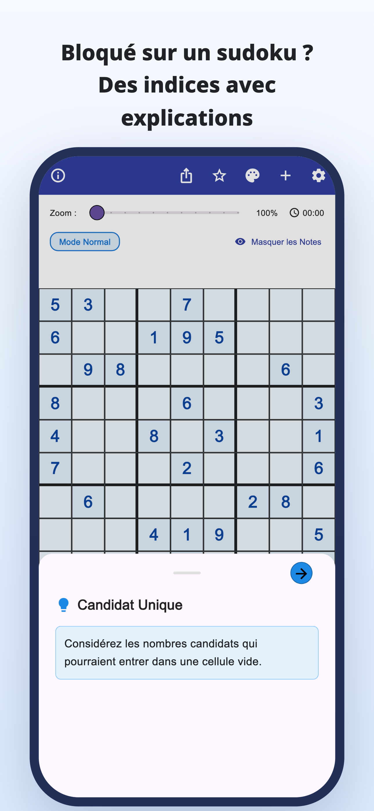
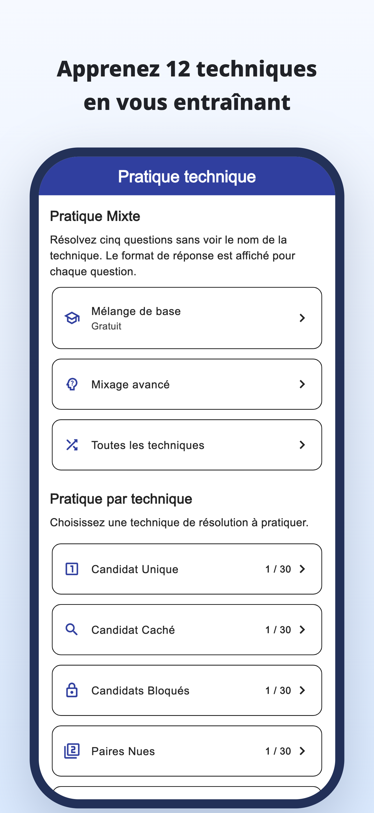
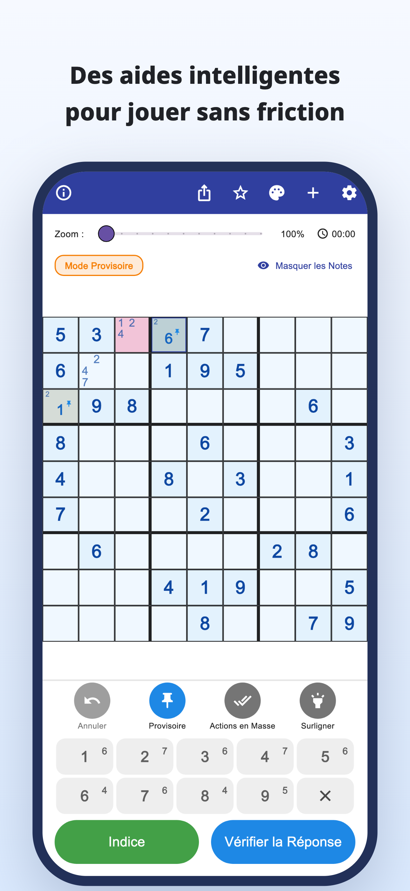
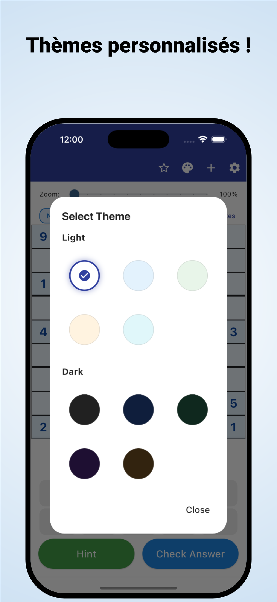

« Où regarder maintenant ? »
Vous examinez la grille encore et encore,
mais restez bloqué au même endroit.
Scanner une grille · Comprendre les indices
Scannez les grilles de vos journaux et magazines.
Comprenez pourquoi un chiffre convient, puis continuez à résoudre par vous-même.
iPhone et Android / Téléchargement gratuit · Achats intégrés




Cela vous arrive en jouant ?
Vous examinez la grille encore et encore,
mais restez bloqué au même endroit.
Pourquoi ce chiffre va-t-il ici ?
Recopier la solution ne suffit pas.
Vous voulez reprendre votre grille papier
et la continuer dans l’application.
Transformer un blocage en piste
Lisez une grille de journal ou de magazine à partir d’une photo, sans saisir chaque chiffre à la main.
Lecture d’une imageLisez le raisonnement derrière un coup et utilisez-le pour chercher la suite, au lieu de simplement recopier la réponse.
Indices expliquésConsultez des explications et des exercices par technique, puis entraînez-vous à les repérer vous-même.
Entraînement par techniquePour ceux qui aiment trouver eux-mêmes
Importez votre grille habituelle et reprenez là où vous en étiez.
Comprenez le passage difficile, puis continuez par vous-même.
Pour les débutants comme pour ceux qui veulent apprendre une nouvelle technique.
Lire · Essayer · S’entraîner
Commencez dans votre navigateur.
Lisez un guide ou jouez une grille complète.
Des notes de candidats aux techniques et exercices.
Essayez une grille entière avec des indices au besoin.
Découvrez les règles et le plaisir de relier les indices.
Regardez la case encadrée en bleu et ouvrez l’indice.
Indice pour le prochain coup
Examinez les candidats d’une case vide.
Cet exemple web permet d’essayer un coup. L’affichage de l’application est différent.
Quand un sudoku vous bloque.
Télécharger Indices Sudoku
Téléchargement gratuit · Achats intégrés
L’application est gratuite à télécharger et à essayer. Les indices, vérifications et lectures d’images sont limités ; certaines utilisations nécessitent une publicité vidéo.
Premium est un abonnement mensuel ou annuel. Il supprime les publicités et permet des indices et vérifications illimités. La lecture d’images reste limitée même avec Premium. Tarifs et conditions dans l’application.
Importez une photo de votre sudoku. Vérifiez les chiffres reconnus et corrigez les erreurs avant de commencer. Les sudokus classiques de 9×9 sont pris en charge.
L’application propose des grilles intégrées ainsi que des explications et exercices par technique. Certaines grilles et certains exercices nécessitent Premium.
En plus de cette démo d’un coup, vous pouvez jouer une grille complète dans votre navigateur et consulter des guides et exercices.
Guide du sudoku